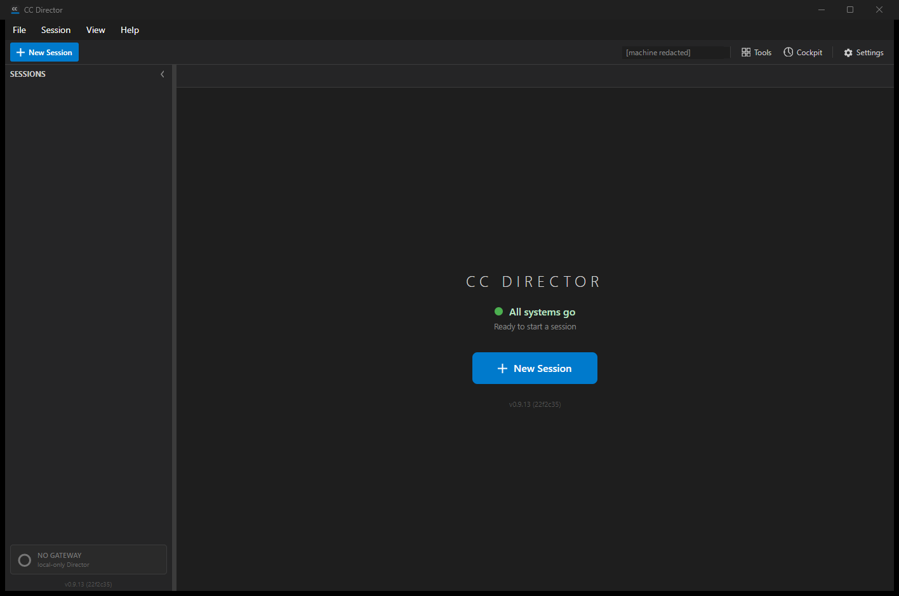

[Account] Director will not run without a logged-in DevThrottle account (online first, offline after). The Director must refuse to reach a usable main window when no DevThrottle account credential exists on this install, and route the user to log in instead; once a credential is cached it runs to the main window online or offline.
A startup account gate that runs after the splash and before the main window becomes usable. It consumes the offline "is this install logged in?" check delivered by issue #583 and decides whether to block (show a gate screen) or start (show the main window). When it starts, the online session validation/refresh runs in the background after the window is shown, so it never delays the window appearing.
Core layer (core_services / CcDirector.Core):
Account/GateDecision.cs - the gate's decision enum (Block / Start).Account/AccountGatePolicy.cs - consumes DevThrottleAccountService.IsLoggedIn()
(#583, local check, no network) to decide Block vs Start, and owns
StartBackgroundValidation() which runs RefreshIfNeededAsync on a
background thread (failures only log).Account/BackendUnavailableTokenRefresher.cs - the ITokenRefresher wired
in until the live DevThrottle backend sign-in exists (a flagged dependency of #580). It reports
the refresh unavailable (returns null) without any network call, so the Director keeps running
on the cached credential exactly as it does offline. This is the honest "no backend yet" signal,
not a fallback that hides a failure - the seam is in place for the real refresher to drop in.Account/DevThrottleAccountFactory.cs - builds the credential service for the running
Director, resolving the signing secret from the DEVTHROTTLE_JWT_SIGNING_SECRET
environment variable and honoring a documented test-credential seam
(DEVTHROTTLE_TEST_SEED_TOKEN) so the gate is provable before the backend exists.Avalonia UI layer (avalonia_ui / CcDirector.Avalonia):
AccountGateScreen.axaml(.cs) - the gate screen shown in place of the main window
when blocked. States that an account is required and why (the Director runs locally and quietly
once signed in; sign in once while online, then run offline after), and offers the action that
leads to login (the login hand-off itself is #581). Dark theme per docs/VisualStyle.md.App.axaml.cs - builds the gate during service initialization and, after the splash,
applies its decision: on Block, shows the gate screen and never reaches the main window; on
Start, shows the main window and then kicks off the background validation.| Criterion | Result | Proof |
|---|---|---|
| Clean profile, no stored credential: the Director does not reach a usable main window; it shows the gate screen. | PASS | Screenshot scenario-a-no-credential.png (window title "Sign in to DevThrottle").
Log: Decide: loggedIn=False, decision=Block then
Startup blocked by account gate ... main window not reached. |
| Stored credential + networking enabled: starts to the main window and a background validation runs without blocking it. | PASS | Screenshot scenario-b-credential-online.png (the main window). Log:
decision=Start, Main window shown, then
StartBackgroundValidation: scheduling ... and RefreshIfNeededAsync. |
| Stored credential + networking disabled: starts to the main window. | PASS | Screenshot scenario-c-credential-offline.png (the main window). The
BackendUnavailableTokenRefresher makes no network call (offline-equivalent), and
an expired token exercises the offline refresh path: refresh unavailable ... keeping
cached credential. |
| The background online validation does not delay the main window appearing; the window is shown before the validation completes. | PASS | Ordered timestamps (scenario B): Main window shown at 01:53:38.348
precedes StartBackgroundValidation: scheduling (same instant) and
StartBackgroundValidation: completed at 01:53:38.350. The window is
shown first; the validation is scheduled and completes afterward. |
| The gate screen states an account is required and why (runs locally and quietly once in) and offers the action that leads to login. | PASS | Screenshot scenario-a-no-credential.png: heading "An account is required to run
the Director", body "...the Director runs locally and quietly on a cached credential, online
or offline...", and a "Sign in to DevThrottle" button. |
| A revoked or expired session, while offline, still runs on the cached credential; revocation takes effect on the next successful online validation. | PASS | Scenario C (expired token): the gate decides Start (the window is reached) and the
background refresh keeps the cached credential when the exchange is unavailable. Unit test
Decide_ExpiredButWellFormedCredential_ReturnsStart and
StartBackgroundValidation_ExpiredCredentialOffline_KeepsCachedCredential. |



Captured per scenario into isolated profile roots (CC_DIRECTOR_ROOT) so each scenario
starts clean and the real per-user credential is never touched. Full file:
director-log-excerpts.log.
=== no-credential === [AccountGatePolicy] Decide: loggedIn=False, decision=Block [AccountGateScreen] Shown: no DevThrottle credential on this install; main window blocked [CcDirector] Startup blocked by account gate: no DevThrottle credential on this install -> gate screen shown, main window not reached === credential-online (ordered timestamps prove the window is not blocked) === 01:53:38.050 [AccountGatePolicy] Decide: loggedIn=True, decision=Start 01:53:38.348 [CcDirector] Main window shown (account gate passed); starting background session validation next 01:53:38.348 [AccountGatePolicy] StartBackgroundValidation: scheduling background session validation (does not block the main window) 01:53:38.349 [DevThrottleAccountService] RefreshIfNeededAsync: evaluating cached credential 01:53:38.350 [AccountGatePolicy] StartBackgroundValidation: completed, refreshed=False === credential-offline (expired token, refresh reported unavailable, cached credential kept) === 01:53:52.944 [AccountGatePolicy] Decide: loggedIn=True, decision=Start 01:53:53.381 [CcDirector] Main window shown (account gate passed); starting background session validation next 01:53:53.383 [DevThrottleAccountService] RefreshIfNeededAsync: access token expired, attempting background refresh 01:53:53.383 [BackendUnavailableTokenRefresher] RefreshAsync: no backend exchange wired yet -> reporting refresh unavailable (cached credential kept) 01:53:53.383 [DevThrottleAccountService] RefreshIfNeededAsync: refresh unavailable (offline or declined) -> keeping cached credential
CcDirector.Core.Tests/Account/AccountGatePolicyTests.cs - 8 tests, all passing:
no credential -> Block; valid credential -> Start; expired-but-well-formed -> Start; tampered ->
Block; background validation refreshes online; offline keeps the cached credential;
BackendUnavailableTokenRefresher returns null; null-service constructor throws.
docs/cencon/architecture_manifest.yaml updated in the same change: added
AccountGateScreen to avalonia_ui and the AccountGatePolicy
component group (with GateDecision, BackendUnavailableTokenRefresher,
DevThrottleAccountFactory) to core_services. No security posture change:
the gate only reads the local logged-in check delivered by #583; no new credential handling, no
DT rule violated.
dotnet build cc-director.sln: Build succeeded, 0 Warning(s), 0 Error(s). Test Director
built to slot 13 in the session's own worktree and exercised directly (this is a non-session-creating
startup test - no Claude session is launched).
I believe this is finished. All six acceptance criteria are met and proven with screenshots, ordered startup-log timestamps, and unit tests. The login hand-off itself (#581), the credential store and logged-in check (#583, merged), and the account area (#582) are out of scope per the issue.